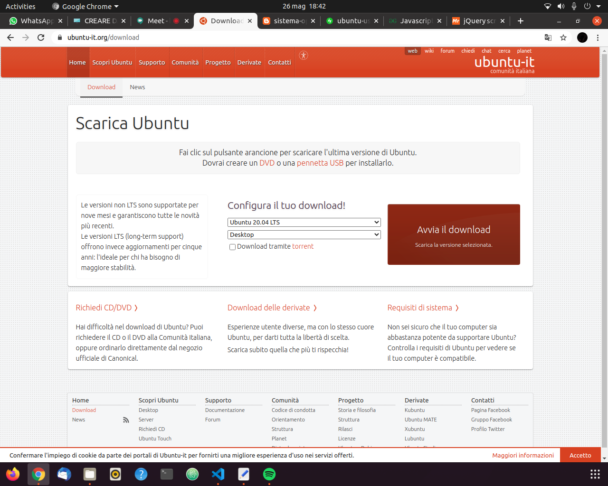

Partiamo con il dare per scontato che il computer appena creato nel precedente tutorial sia completamente vuoto (ovvero accendendolo si veda chiaramente il BIOS). Se è così, puoi procedere con l'installazione del Sistema Operativo.
Premesse fondamentali:
Procurati un altro computer, dove installerai il sistema operativo e lo caricarei su una chiavetta (i passaggi sono spiegati qui di seguito). Il nostro tipo di installazione si chiama infatti FLASH USB INSTALLER,
ovvero andremo ad installare il sistema operativo sul computer da un'altra chiavetta! Procurati quindi una chiavetta VUOTA (altrimenti tutti i file verranno eliminati) da almeno 10Gb di spazio.
- Per prima cosa, devi scegliere quale sistema operativo vuoi installare sul tuo computer. Ti proponiamo
qui alcuni dei nostri preferiti sistemi operativi (di cui la maggior parte GRATUITI);

- Dopo averlo scelto, vai sul sito (sempre linkato nella nostra pagina) del sistema operativo scelto e clicca sul tasto Download;

- Una volta completato il download, ti accorgerai che il file scaricato è un'immagine .iso. Ora, se provassi a mettere quel file sulla chiavetta, ad attaccarla al comnputer e ad accenderlo, ti accorgeresti che non funziona. Questo perché
dobbiamo prima rendere eseguibile quell'immagine .iso che hai scaricato, così che il tuo computer riesca a leggerla all'accensione. Per fare ciò, scarica balenaEtcher, un software in grado
di farlo. Quindi aprilo e seleziona: il file .iso del sistema operativo; la chiavetta (attaccata al computer) su cui vuoi mettere i file;

- Completata questa operazione, non ti resta che attaccare la chiavetta con i file di boot (ovvero i file che fanno partire l'installazione del sistema operativo sul tuo computer) sul tuo computer appena montato, accenderlo premendo
ripetutamente F11 (in realtà dipende dal tipo di BIOS installato) e aspettare quindi che ti venga fuori una sorta di menù chiamato BOOT LOADER. Con questo menù puoi praticamente scegliere da quale disco, o chiavetta inserita, vuoi
far partire il tuo computer. Nel nostro caso, ovviamento, vogliamo far partire il computer con la chiavetta con i file di installazione del sistema operativo che hai caricato! Quindi seleziona con le freccette (quelle in basso a destra
della tastiera) il nome della chiavetta che hai inserito, e premi INVIO;

- Ti sembrerà incredibile, ma come per magia, ti si aprirà il menù di installazione del sistema operativo che hai scelto. Seleziona la voce "Install [nome del tuo sistema operativo]" e a questo punto non ti resta che seguire le istruzioni per
l'installazione del sistema operativo, come per esempio "Selezione della lingua", "Se vuoi già tutti i software d'ufficio (come Libre Office) o preferisci installare dopo", "La configurazione della rete Wi-Fi di casa tua", ecc... (p.s.
non preoccuparti, è tutto guidato);

Ti proponiamo un altro tutorial scelto da noi qui!